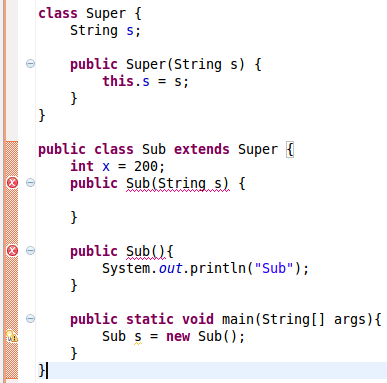

Java程序员们最常犯的10个错误
By Lee - Last updated: 星期日, 七月 13, 2014
将数组转化为一个列表时，程序员们经常这样做：
List<String> list = Arrays.asList(arr);
Arrays.asList()会返回一个ArrayList对象，ArrayList类是Arrays的一个私有静态类，而不是java.util.ArrayList类，java.util.Arrays.ArrayList类有set()、get()、contains()方法，但是没有增加元素的方法，所以它的大小是固定的，想要创建一个真正的ArrayList类，你应该这样做:
ArrayList<String> arrayList = new ArrayList<String>(Arrays.asList(arr));
ArrayList的构造方法可以接受一个集合类型，刚好它也是java.util.Arrays.ArrayList的超类。
2.判断一个数组是否包含一个值
程序员们经常这样做:
Set<String> set = new HashSet<String>(Arrays.asList(arr));
return set.contains(targetValue);
这段代码起作用，但是没有必要把一个数组转化成列表，转化为列表需要额外的时间。它可以像下面那样简单:
Arrays.asList(arr).contains(targetValue);
或者是:
for(String s:arr){
if(s.equals(targetValue)){
return true;
}
}
return false;
第一种方法比第二种更容易读
3.在一个循环中删除一个列表中的元素
思考下面这一段在循环中删除多个元素的的代码
ArrayList<String> list = new ArrayList<String>(Arrays.asList("a","b","c","d"));
for(int i=0;i<list.size();i++){
list.remove(i);
}
System.out.println(list);
输出结果是:
[b,d]
在这个方法中有一个严重的错误。当一个元素被删除时，列表的大小缩小并且下标变化，所以当你想要在一个循环中用下标删除多个元素的时候，它并不会正常的生效。
你也许知道在循环中正确的删除多个元素的方法是使用迭代，并且你知道java中的foreach循环看起来像一个迭代器，但实际上并不是。考虑一下下面的代码:
ArrayList<String> list = new ArrayList<String>(Arrays.asList("a","b","c","d"));
for(String s:list){
if(s.equals("a")){
list.remove(s);
}
}
它会抛出一个ConcurrentModificationException异常。 相反下面的显示正常：
ArrayList<String> list = new ArrayList<String>(Arrays.asList("a","b","c","d"));
Iterator<String> iter = list.iterator();
while(iter.hasNext()){
String s = iter.next();
if(s.equals("a")){
iter.remove();
}
}
.next()必须在.remove()之前调用。在一个foreach循环中，编译器会使.next()在删除元素之后被调用，因此就会抛出ConcurrentModificationException异常，你也许希望看一下ArrayList.iterator()的源代码。
4.Hashtable与HashMap的对比
就算法而言，哈希表是数据结构的一个名字。但是在java中，这个数据结构的名字是HashMap。Hashtable与HashMap的一个重要不同点是Hashtable是同步的。所以你经常不需要Hashtable,相反HashMap经常会用到。
HashMap vs. TreeMap vs. Hashtable vs. LinkedHashMap
5.在集合中使用原始类型
在Java中原始类型与无界通配符类型很容易混合在一起，拿Set来说，Set是一个原始类型，而Set<?>是无界的通配符类型。
考虑下面使用原始类型List作为参数的代码:
public static void add(List list,Object o){
list.add(o);
}
pulbic static void main(String[] args){
List<String> list = new ArrayList<String>();
add(list,10);
String s = list.get(0);
这段代码会抛出一个异常：
Exception in thread "main" java.lang.ClassCastException: java.lang.Integer cannot be cast to java.lang.String
at ...
使用原生类型集合是危险的，这是因为原生类型集合跳过了泛型类型检查，并且不是安全的，在Set、Set<?>和Set<Object>中有很大的不同，具体请看Raw type vs. Unbounded wildcard和Type Erasure。
6.访问级别
程序员们经常使用public作为类字段的修饰符，可以很简单的通过引用得到值，但这是一个坏的设计，按照经验，分配给成员变量的访问级别应该尽可能的低。
public, default, protected, and private
7.ArrayList与LinkedList的对比
当程序员们不知道ArrayList与LinkedList的区别时，他们经常使用ArrayList，因为它看起来比较熟悉。然而，它们之前有巨大的性能差别。简而言之，如果有大量的增加删除操作并且没有很多的随机访问元素的操作，应该首先LinkedList。如果你刚接触它们，请查看 ArrayList vs. LinkedList来获得更多关于它们性能的信息。
8.可变与不可变
不可变对象有许多的优点，比如简单，安全等等。但是对于每一个不同的值都需要一个独立的对象，太多的对象可能会造成大量的垃圾回收。当选择可变与不可变时应该有一个平衡。 一般的，可变对象用来避免产生大量的中间对象。一个典型的例子是连接大量的字符串。如果你用一个不可变的字符串，你会产生很多需要进行垃圾回收的对象。这很浪费CPU的时间，使用可变对象是正确的解决方案(比如StringBuilder)。
String result="";
for(String s: arr){
result = result + s;
}
有时在某些情况下也是需要可变对象的，比如将可变对象作为参数传入方法，你不用使用很多语句便可以得到多个结果。另外一个例子是排序和过滤：当然，你可以写一个方法来接收原始的集合，并且返回一个排好序的集合，但是那样对于大的集合就太浪费了。(来自StackOverFlow的dasblinkenlight’s的答案)
9.父类与子类的构造函数
 这个编译期错误的出现是父类默认的构造方法未定义，在java中，如果一个类没有定义构造方法，编译器会默认的为这个类添加一个无参的构造方法。如果在父类中定义了构造方法，在这个例子中是Super(String s),编译器就不会添加默认的无参构造方法，这就是上面这个父类的情形。 子类的构造器，不管是无参还有有参，都会调用父类的无参构造器。因为编译器试图在子类的两个构造方法中添加super()方法。但是父类默认的构造方法未定义，编译器就会报出这个错误信息。 想要修复这个问题，可以简单的通过1)在父类中添加一个Super()构造方法，像下面这样：
{kind=link}
public Super(){
System.out.println("Super");
}
或者2)移除父类自定义的构造方法，或者3)在子类的构造方法中调用父类的super(value)方法。
10.””还是构造器
有两种方式可以创建字符串
//1.使用字符串
String x = "abc";
//2.使用构造器
String y = new String("abc");
有什么区别？ 下面的例子会给出一个快速的答案:
String a = "abc";
String b = "abc";
System.out.println(a==b);//true
System.out.println(a.equals(b));//true
String c = new String("abc");
String d = new String("abc");
System.out.println(c==d);//false
System.out.println(c.equals(d));//true
关于它们内存分配的更多信息，请参考Create Java String Using ” ” or Constructor?.
将来的工作
这个列表是我基于大量的github上的开源项目，Stack overflow上的问题，还有一些流行的google搜索的分析。没有明显示的评估证明它们是前10，但它们绝对是很常见的。如果您不同意任一部分，请留下您的评论。如果您能提出其它一些常见的错误，我将会非常感激。